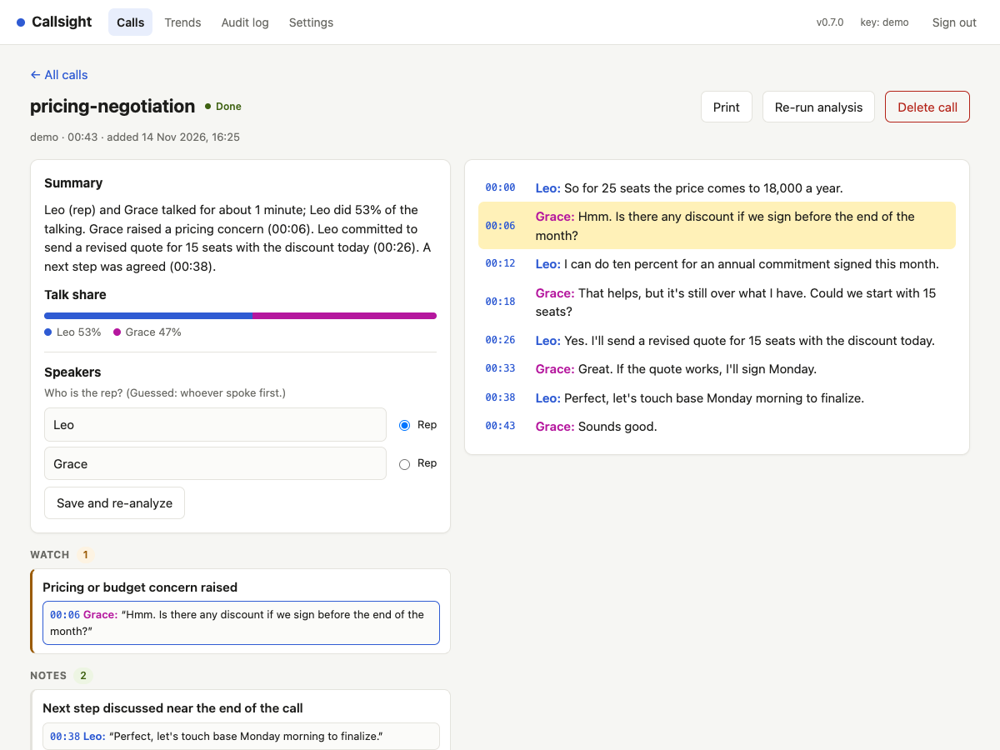

Call intelligence you host yourself
Feed Callsight a sales call and get back a summary and flagged risks: pricing objections, competitor mentions, no next step, a rep who talks too much. Every insight links to the exact transcript line behind it. Local models, your servers, no per-seat pricing.

What it does
Upload a recording or paste a transcript. Callsight transcribes, separates speakers and analyzes the call in the background.
Evidence on every insight
Each flag carries the speaker, timestamp and quote it came from, so nobody has to trust a black box.
Objections and risks
Pricing, timing and authority objections, competitor mentions, commitments, and calls that end without a next step.
Audio in, report out
Whisper transcription on CPU, stereo channels as speakers, and opt-in speaker separation for mono recordings.
Search by meaning
Ask "they want to wait until next quarter" and find those moments across every call, not just exact words.
Trends
Which issues come up most, competitors mentioned, calls per week, and the calls that need attention.
Built for teams
Single sign-on with any OIDC provider, organizations, admin roles, API keys, an audit log and a signed webhook.
Why self-hosted
Conversation-intelligence tools are sold per seat and keep your recordings on someone else's servers. The software around the models is the replaceable part.
Your data stays put
Analysis runs on local models through Ollama. Recordings never leave your servers.
Choose your models
Rules work with no model at all. Add an LLM for summaries and harder objections when you want them.
Open source
Apache-2.0. Read the code, run it anywhere, change what you need.
Measured, not promised
Precision and recall on a labelled set of 30 calls, using the default setup (rules plus llama3.1 8B). These calls are synthetic, written to probe known weaknesses; numbers on real calls will differ.
| What it flags | Precision | Recall |
|---|---|---|
| Competitor mentions | 100% | 100% |
| Rep commitments | 100% | 95% |
| Pricing objections | 88% | 70% |
| No next step | 87% | 100% |
| Timing objections | 80% | 89% |
| Authority objections | 75% | 75% |
"Doubts the need" objections are not reported yet: no model tried gets them right often enough. Method and every miss: evals/README.md.
Quick start
Needs Docker. Loads six example calls and prints an API key.
git clone https://github.com/de-ansh/callsight.git && cd callsight
docker compose up --build -d
docker compose exec api python -m callsight.admin demoOpen http://localhost:8000, paste the key, and click any insight's quote to jump to the line.
For production (TLS, backups, upgrades) see the
deployment guide.
Where it stands
- Early: everything listed above works and is tested, but it has only been measured on synthetic calls.
- Not yet: Zoom, Meet or dialer connectors. Calls arrive by upload, paste or webhook.
- English only for the rules; Whisper and the LLM handle more languages.
- Run it behind a reverse proxy for TLS and rate limiting.
See the roadmap. Labelled real calls (consented and anonymized) are the most useful contribution.